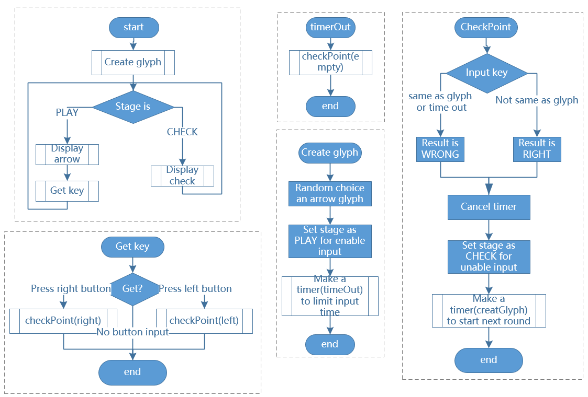

Bemerkung
Hallo und willkommen in der SunFounder Raspberry Pi & Arduino & ESP32 Enthusiasten-Gemeinschaft auf Facebook! Tauchen Sie tiefer ein in die Welt von Raspberry Pi, Arduino und ESP32 mit anderen Enthusiasten.
Warum beitreten?
Expertenunterstützung: Lösen Sie Nachverkaufsprobleme und technische Herausforderungen mit Hilfe unserer Gemeinschaft und unseres Teams.
Lernen & Teilen: Tauschen Sie Tipps und Anleitungen aus, um Ihre Fähigkeiten zu verbessern.
Exklusive Vorschauen: Erhalten Sie frühzeitigen Zugang zu neuen Produktankündigungen und exklusiven Einblicken.
Spezialrabatte: Genießen Sie exklusive Rabatte auf unsere neuesten Produkte.
Festliche Aktionen und Gewinnspiele: Nehmen Sie an Gewinnspielen und Feiertagsaktionen teil.
👉 Sind Sie bereit, mit uns zu erkunden und zu erschaffen? Klicken Sie auf [hier] und treten Sie heute bei!
3.1.14 SPIEL - Nicht nicht
Einführung
In dieser Lektion werden wir ein interessantes Spielgerät herstellen und es „Nicht nicht“ nennen.
Während des Spiels aktualisiert die Punktmatrix einen Pfeil nach dem Zufallsprinzip. Sie müssen die Taste innerhalb einer begrenzten Zeit in die entgegengesetzte Richtung des Pfeils drücken. Wenn die Zeit abgelaufen ist oder wenn die Taste in die gleiche Richtung wie der Pfeil gedrückt wird, sind Sie raus.
Dieses Spiel kann wirklich Ihr umgekehrtes Denken üben, und jetzt sollen wir es versuchen?
Komponenten

Schematische Darstellung
T-Karte Name |
physisch |
wiringPi |
BCM |
GPIO17 |
Pin 11 |
0 |
17 |
GPIO18 |
Pin 12 |
1 |
18 |
GPIO27 |
Pin 13 |
2 |
27 |
GPIO20 |
Pin 38 |
28 |
20 |
GPIO26 |
Pin 37 |
25 |
26 |

Experimentelle Verfahren
Schritt 1: Bauen Sie die Schaltung auf.

Für Benutzer in C-Sprache
Schritt 2: Gehen Sie zum Code-Ordner.
cd ~/davinci-kit-for-raspberry-pi/c/3.1.14/
Schritt 3: Kompilieren.
gcc 3.1.14_GAME_NotNot.c -lwiringPi
Schritt 4: Ausführen.
sudo ./a.out
Nach dem Start des Programms wird ein Pfeil nach links oder rechts in der Punktmatrix nach dem Zufallsprinzip aktualisiert. Sie müssen die Taste innerhalb einer begrenzten Zeit in die entgegengesetzte Richtung des Pfeils drücken. Dann erscheint „√“ auf der Punktmatrix. Wenn die Zeit abgelaufen ist oder wenn die Taste in die gleiche Richtung wie der Pfeil gedrückt wird, sind Sie ausgeschaltet und die Punktmatrix zeigt „x“ an. Sie können auch 2 neue Schaltflächen hinzufügen oder durch Joystick-Tasten für Auf, Ab, Links und Rechts ersetzen - 4 Richtungen, um die Schwierigkeit des Spiels zu erhöhen.
Code Erklärung
Basierend auf 1.1.6 LED Dot Matrix fügt diese Lektion 2 Tasten hinzu, um ein amüsantes Spielgerät zu erstellen. Wenn Sie mit der Punktmatrix nicht sehr vertraut sind, lesen Sie bitte 1.1.6 LED-Punktmatrix.
Der gesamte Programmprozess ist wie folgt:
Wählen Sie zufällig eine Pfeilrichtung und generieren Sie Timer 1.
Zeigen Sie das Pfeilbild auf der Punktmatrix an.
Beurteilen Sie die Tasteneingabe. Wenn die Taste gedrückt wird oder Timer 1 daran erinnert, dass die Zeit abgelaufen ist, beginnt die Beurteilung.
Zeigen Sie das Bild anhand eines Bewertungsergebnisses an. In der Zwischenzeit Timer 2 generieren.
Führen Sie Schritt 1 erneut aus, wenn Timer 2 daran erinnert, dass die Zeit abgelaufen ist.
struct GLYPH{
    char *word;
    unsigned char code[8];
};
struct GLYPH arrow[2]=
{
    {"right",{0xFF,0xEF,0xDF,0x81,0xDF,0xEF,0xFF,0xFF}},
    // {"down",{0xFF,0xEF,0xC7,0xAB,0xEF,0xEF,0xEF,0xFF}},
    // {"up",{0xFF,0xEF,0xEF,0xEF,0xAB,0xC7,0xEF,0xFF}},
    {"left",{0xFF,0xF7,0xFB,0x81,0xFB,0xF7,0xFF,0xFF}}
};
struct GLYPH check[2]=
{
    {"wrong",{0xFF,0xBB,0xD7,0xEF,0xD7,0xBB,0xFF,0xFF}},
    {"right",{0xFF,0xFF,0xF7,0xEB,0xDF,0xBF,0xFF,0xFF}}
};
Die GLYPH-Struktur funktioniert wie ein Wörterbuch: Das Wort Attribut entspricht dem Schlüssel im Wörterbuch. Das Kode-Attribut entspricht dem Wert.
Hier wird Kode verwendet, um ein Array für die Punktmatrix zum Anzeigen von Bildern zu speichern (ein 8x8-Bit-Array).
Hier kann der Array-Pfeil verwendet werden, um das Pfeilmuster in Aufwärts-, Abwärts-, Links- und Rechtsrichtung auf der LED-Punktmatrix anzuzeigen.
Jetzt werden unten und oben kommentiert und bei Bedarf auskommentiert.
Die Array-Prüfung wird verwendet, um diese beiden Bilder anzuzeigen: „ד und „√“.
char *lookup(char *key,struct GLYPH *glyph,int length){
    for (int i=0;i<length;i++)
    {
        if(strcmp(glyph[i].word,key)==0){
            return glyph[i].code;
        }
    }
}
Die Funktion lookup() funktioniert durch „Überprüfen des Wörterbuchs“. Definieren Sie einen key ,
suchen Sie die gleichen Wörter wie der key in der Struktur GLYPH * glyph und geben Sie die entsprechenden Informationen zurück - „kode“ des bestimmten Wortes.
Die Funktion strcmp() wird verwendet,
um die Identität von zwei Zeichenfolgen glyph[i].word und key zu vergleichen;
Wenn die Identität beurteilt wird, geben Sie den glyph[i].code zurück (wie gezeigt).
void display(char *glyphCode){
    for(int i;i<8;i++){
        hc595_in(glyphCode[i]);
        hc595_in(0x80>>i);
        hc595_out();
    }
}
Zeigen Sie das angegebene Muster in der Punktmatrix an.
void createGlyph(){
    srand(time(NULL));
    int i=rand()%(sizeof(arrow)/sizeof(arrow[0]));
    waypoint=arrow[i].word;
    stage="PLAY";
    alarm(2);
}
Mit der Funktion createGlyph() wird zufällig eine Richtung ausgewählt (das Wortattribut eines Elements im array arrow[]: „left“, „right“…). Stellen Sie die Bühne auf „PLAY“ und starten Sie eine 2-Sekunden-Weckerfunktion.
srand(time(NULL)) : Initialisiert zufällige Seeds, die von der Systemuhr stammen.
(sizeof(arrow)/sizeof(arrow[0])) : Ermittelt die Länge des Arrays, das Ergebnis ist 2.
rand()%2 : Der Rest ist 0 oder 1, erhalten durch Teilen einer generierten Zufallsnummer durch 2.
waypoint=arrow[i].word : Das Ergebnis sollte right oder left sein.
void checkPoint(char *inputKey){
    alarm(0)==0;
    if(inputKey==waypoint||inputKey=="empty")
    {
        waypoint="wrong";
    }
    else{
        waypoint="right";
    }
    stage="CHECK";
    alarm(1);
}
Mit checkPoint() wird die Tasteneingabe überprüft.
Wenn die Taste nicht gedrückt wird oder die Taste in die gleiche Richtung wie der Pfeil gedrückt wird,
ist das Ergebnis des Wegpunkts falsch und auf der Punktmatrix wird „x“ angezeigt.
Andernfalls ist der Wegpunkt richtig und die Punktmatrix zeigt „√“ an.
Hier ist die Stufe CHECK und es kann eine 1-Sekunden-Weckerfunktion eingestellt werden.
alarm() wird auch als „Wecker“ bezeichnet, bei dem ein Timer eingestellt werden kann,
und sendet SIGALRM-Signale an den Fortschritt, wenn die definierte Zeit abgelaufen ist.
void getKey(){
    if (digitalRead(AButtonPin)==1&&digitalRead(BButtonPin)==0)
    {checkPoint("right");}
    else if (digitalRead(AButtonPin)==0&&digitalRead(BButtonPin)==1)
    {checkPoint("left");}
}
getKey() liest die Zustände dieser beiden Schaltflächen;
Wenn die rechte Taste gedrückt wird, ist der Parameter der Funktion checkPoint()
rechts und wenn die linke Taste gedrückt wird, bleibt der Parameter links.
void timer(){
    if (stage=="PLAY"){
        checkPoint("empty");
    }
    else if(stage=="CHECK"){
        createGlyph();
    }
}
Previously, timer() was called when set as the alarm() time’s up. Then under the "PLAY" mode, checkPoint() is to be called to judge the outcome. If the program is set to "CHECK" mode, the function createGlyph() should be called to select new patterns.
Zuvor wurde timer() aufgerufen,
wenn die Alarmzeit abgelaufen ist.
Im Modus „PLAY“ soll dann checkPoint() aufgerufen werden,
um das Ergebnis zu beurteilen.
Wenn das Programm auf den Modus „CHECK“ eingestellt ist, sollte die Funktion createGlyph() aufgerufen werden,
um neue Muster auszuwählen.
void main(){
    setup();
    signal(SIGALRM,timer);
    createGlyph();
    char *code = NULL;
    while(1){
        if (stage == "PLAY")
        {
            code=lookup(waypoint,arrow,sizeof(arrow)/sizeof(arrow[0]));
            display(code);
            getKey();
        }
        else if(stage == "CHECK")
        {
            code = lookup(waypoint,check,sizeof(check)/sizeof(check[0]));
            display(code);
        }
    }
}
Die Funktionsweise des Funktions signal(SIGALRM,timer) : Aufruf der Funktion timer(),
wenn ein SIGALRM -Signal (vom Weckerfunktions alarm() erzeugt) empfangen wird.
Wenn das Programm startet, rufen Sie zunächst einmal createGlyph() auf und starten Sie dann die Schleife.
In der Schleife: Im PLAY-Modus zeigt die Punktmatrix Pfeilmuster an und überprüft den Schaltflächenstatus. Im CHECK-Modus wird „x“ oder „√“ angezeigt.
Für Python-Sprachbenutzer
Schritt 2: Rufen Sie den Code-Ordner auf.
cd ~/davinci-kit-for-raspberry-pi/python
Schritt 3: Ausführen.
sudo python3 3.1.14_GAME_NotNot.py
Nach dem Starten des Programms erscheint auf der Punktmatrix ein Pfeil nach rechts oder links. Sie müssen die Taste innerhalb einer begrenzten Zeit in die entgegengesetzte Richtung des Pfeils drücken. Dann erscheint „√“ auf der Punktmatrix. Wenn die Zeit abgelaufen ist oder wenn die Taste in die gleiche Richtung wie der Pfeil gedrückt wird, sind Sie ausgeschaltet und die Punktmatrix zeigt „x“ an. Sie können auch 2 neue Schaltflächen hinzufügen oder durch Joystick-Tasten für Auf, Ab, Links und Rechts ersetzen - 4 Richtungen, um die Schwierigkeit des Spiels zu erhöhen.
Code
Bemerkung
Sie können den folgenden Code Ändern/Zurücksetzen/Kopieren/Ausführen/Stoppen . Zuvor müssen Sie jedoch zu einem Quellcodepfad wie davinci-kit-for-raspberry-pi/python gehen.
import RPi.GPIO as GPIO
import time
import threading
import random
SDI = 17
RCLK = 18
SRCLK = 27
timerPlay = 0
timerCheck = 0
AButtonPin = 20
BButtonPin = 26
waypoint = "NULL"
stage = "NULL"
arrow={
#"down" :[0xFF,0xEF,0xC7,0xAB,0xEF,0xEF,0xEF,0xFF],
#"up":[0xFF,0xEF,0xEF,0xEF,0xAB,0xC7,0xEF,0xFF],
"right" : [0xFF,0xEF,0xDF,0x81,0xDF,0xEF,0xFF,0xFF],
"left":[0xFF,0xF7,0xFB,0x81,0xFB,0xF7,0xFF,0xFF]
}
check={
"wrong":[0xFF,0xBB,0xD7,0xEF,0xD7,0xBB,0xFF,0xFF],
"right":[0xFF,0xFF,0xF7,0xEB,0xDF,0xBF,0xFF,0xFF]
}
def setup():
GPIO.setmode(GPIO.BCM) # Number GPIOs by its BCM location
GPIO.setup(SDI, GPIO.OUT)
GPIO.setup(RCLK, GPIO.OUT)
GPIO.setup(SRCLK, GPIO.OUT)
GPIO.output(SDI, GPIO.LOW)
GPIO.output(RCLK, GPIO.LOW)
GPIO.output(SRCLK, GPIO.LOW)
GPIO.setup(AButtonPin,GPIO.IN)
GPIO.setup(BButtonPin,GPIO.IN)
# Shift the data to 74HC595
def hc595_shift(dat):
for bit in range(0, 8):
GPIO.output(SDI, 0x80 & (dat << bit))
GPIO.output(SRCLK, GPIO.HIGH)
GPIO.output(SRCLK, GPIO.LOW)
def display(glyphCode):
for i in range(0, 8):
hc595_shift(glyphCode[i])
hc595_shift(0x80>>i)
GPIO.output(RCLK, GPIO.HIGH)
GPIO.output(RCLK, GPIO.LOW)
def creatGlyph():
global waypoint
global stage
global timerPlay
waypoint=random.choice(list(arrow.keys()))
stage = "PLAY"
timerPlay = threading.Timer(2.0, timeOut)
timerPlay.start()
def checkPoint(inputKey):
global waypoint
global stage
global timerCheck
if inputKey == "empty" or inputKey == waypoint:
waypoint = "wrong"
else:
waypoint = "right"
timerPlay.cancel()
stage = "CHECK"
timerCheck = threading.Timer(1.0, creatGlyph)
timerCheck.start()
def timeOut():
checkPoint("empty")
def getKey():
if GPIO.input(AButtonPin)==1 and GPIO.input(BButtonPin)==0:
checkPoint("right")
elif GPIO.input(AButtonPin)==0 and GPIO.input(BButtonPin)==1:
checkPoint("left")
def main():
creatGlyph()
while True:
if stage == "PLAY":
display(arrow[waypoint])
getKey()
elif stage == "CHECK":
display(check[waypoint])
def destroy():
global timer1
GPIO.cleanup()
timerPlay.cancel() # cancel the timer
timerCheck.cancel()
if __name__ == '__main__':
setup()
try:
main()
except KeyboardInterrupt:
destroy()
Code Erklärung
Basierend auf 1.1.6 LED Dot Matrix fügt diese Lektion 2 Tasten hinzu, um ein amüsantes Spielgerät zu erstellen. Wenn Sie mit der Punktmatrix nicht sehr vertraut sind, lesen Sie bitte 1.1.6 LED-Punktmatrix .
Der gesamte Programmprozess ist wie folgt:
{kind=link}
Wählen Sie zufällig eine Pfeilrichtung und generieren Sie Timer 1.
Zeigen Sie das entsprechende Pfeilbild in der Punktmatrix an.
Beurteilen Sie die Tasteneingabe. Wenn die Taste gedrückt wird oder Timer 1 daran erinnert, dass die Zeit abgelaufen ist, beginnt die Beurteilung.
Zeigen Sie das Bild anhand eines Bewertungsergebnisses an. In der Zwischenzeit Timer 2 generieren.
Führen Sie Schritt 1 erneut aus, wenn Timer 2 daran erinnert, dass die Zeit abgelaufen ist.
def main():
    creatGlyph()
    while True:
        if stage == "PLAY":
            display(arrow[waypoint])
            getKey()
        elif stage == "CHECK":
            display(check[waypoint])
main() contains the whole running process.
Wenn das Programm startet, rufen Sie zunächst einmal creatGlyph() auf und starten Sie dann die Schleife.
In der Schleife: Im PLAY-Modus zeigt die Punktmatrix Pfeilmuster an und überprüft den Schaltflächenstatus. Im CHECK-Modus wird „x“ oder „√“ angezeigt.
arrow={
    #"down" :[0xFF,0xEF,0xC7,0xAB,0xEF,0xEF,0xEF,0xFF],
    #"up":[0xFF,0xEF,0xEF,0xEF,0xAB,0xC7,0xEF,0xFF],
    "right" : [0xFF,0xEF,0xDF,0x81,0xDF,0xEF,0xFF,0xFF],
    "left":[0xFF,0xF7,0xFB,0x81,0xFB,0xF7,0xFF,0xFF]
}
check={
    "wrong":[0xFF,0xBB,0xD7,0xEF,0xD7,0xBB,0xFF,0xFF],
    "right":[0xFF,0xFF,0xF7,0xEB,0xDF,0xBF,0xFF,0xFF]
}
Hier kann der Wörterbuch-Pfeil verwendet werden, um das Pfeilmuster nach oben, unten, links und rechts auf der LED-Punktmatrix anzuzeigen.
Jetzt werden unten und oben kommentiert und bei Bedarf auskommentiert.
Die Wörterbuch Prüfung wird verwendet, um diese beiden Bilder anzuzeigen: „ד und „√“.
def display(glyphCode):
    for i in range(0, 8):
        hc595_shift(glyphCode[i])
        hc595_shift(0x80>>i)
        GPIO.output(RCLK, GPIO.HIGH)
        GPIO.output(RCLK, GPIO.LOW)
Zeigen Sie das angegebene Muster in der Punktmatrix an.
def creatGlyph():
    global waypoint
    global stage
    global timerPlay
    waypoint=random.choice(list(arrow.keys()))
    stage = "PLAY"
    timerPlay = threading.Timer(2.0, timeOut)
    timerPlay.start()
The function createGlyph() is used to randomly select a direction (the word attribute of an element in the array arrow[]: "left", "right"… ). Set the stage as "PLAY" and start a 2-second alarm clock function.
Mit der Funktion creatGlyph() wird zufällig eine Richtung ausgewählt
(das Wortattribut eines Elements im array arrow[] : left , right …).
Stellen Sie die Bühne auf „PLAY“ und starten Sie eine 2-Sekunden-Weckerfunktion.
arrow.keys() : Wählen Sie die Tasten right und left im Pfeilarray.
list(arrow.keys()) : Kombinieren Sie diese Schlüssel zu einem Array.
random.choice(list(arrow.keys())) : Wählen Sie zufällig ein Element im Array aus.
Das Ergebnis von waypoint=random.choice(list(arrow.keys())) sollte also right oder left sein.
def checkPoint(inputKey):
    global waypoint
    global stage
    global timerCheck
    if inputKey == "empty" or inputKey == waypoint:
        waypoint = "wrong"
    else:
        waypoint = "right"
    timerPlay.cancel()
    stage = "CHECK"
    timerCheck = threading.Timer(1.0, creatGlyph)
    timerCheck.start()
Mit checkPoint() wird der aktuelle Status der Tasteneingabe ermittelt:
Wenn keine Taste gedrückt wird oder die Taste in die gleiche Richtung wie der Pfeil gedrückt wird,
ist der zugewiesene Wert des waypoint wrong
und zeigt x auf der Punktmatrix.
Andernfalls ist der Wegpunkt richtig und „√“ wird angezeigt.
Jetzt ist die Stufe CHECK und startet einen 1-Sekunden-Timer timerCheck , um die Funktion creatGlyph() in einer Sekunde aufzurufen.
def timeOut():
    checkPoint("empty")
Setzen Sie im Funktions timeout() , den Parameter von checkPoint() auf "empty".
def getKey():
    if GPIO.input(AButtonPin)==1 and GPIO.input(BButtonPin)==0:
        checkPoint("right")
    elif GPIO.input(AButtonPin)==0 and GPIO.input(BButtonPin)==1:
        checkPoint("left")
getKey() liest den Status dieser beiden Schaltflächen, und wenn die rechte Schaltfläche gedrückt wird,
ist der Parameter von checkPoint() right ; Wenn die left Taste gedrückt wird, bleibt der Parameter übrig.
Phänomen Bild